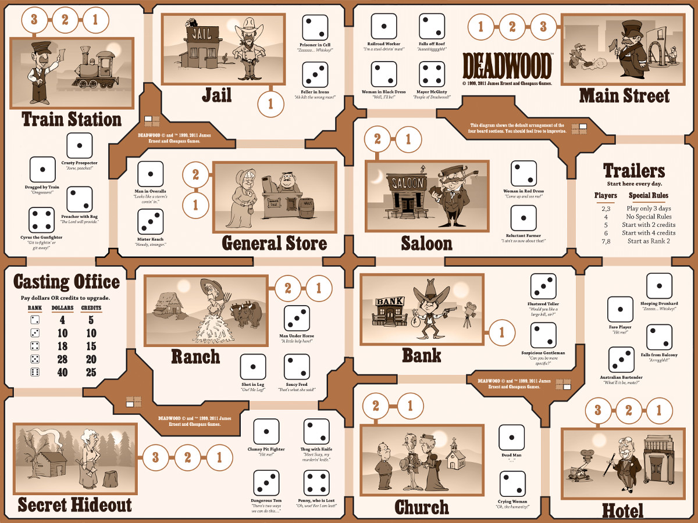

Projects
Water Telemetry Team Lead // Spring 2020 - Winter 2021
-
Goal: develop a water telemetry device
-
Client: Western Washington University
-
Skills: team leadership, mentorship, SQL, JavaScript, Node.js, Docker
-
In this project I took on the role of being the lead developer for Western Washington University's Sea Discovery Center in Poulsbo Washington.
-
My teams project was to develop a water telemetry device that recorded information about the water within the Salish Sea. To achieve this we developed and maintained three distinct projects.
-
Water Telemetry Device: a device which recorded salinity, turbidity and temperature of the water.
-
Android Application: an application which allowed those to access the telemetry device, pull information and push it to the server.
-
Web Server Application: where all of our data was stored, monitored and accessible for study.
-
By far this was my favorite project to have worked on. Due to the nature of it being a legacy project and always recruiting new members, it helped push myself as a engineer and allowed me to become more agile in my development stratergies. Here is a little diagram of the Telemetry project incase you are curious on the various funtions of the work.

Deadwood // Fall 2019

-
Goal: develop a game.
-
Class: Object Orientated Design
-
Skills: object orientated design, full stack development, general user interface, and team management
-
To begin developing a game my partner and I developed a few models to represent the relationships and actions that each object was going to be able to do and how it interacted with others.
-
Once our models were developed we then created a rough idea of how our game would be interacted with. Using the Model View Control idea we developed a text based version of our game to make porting from a text version to a general user interface much easier on our end.
-
Alog with this project we learned XML to properly store our users data and allow for savign through out the game if the user did not want to stay and play the game in one sitting.
-
Upon completion of our text based model we then spent 2 weeks developing a gui for a game.
Miniature Operating System // Winter 2020
-
Goal: create a operating system from the ground up
-
Class: Computer Systems II
-
Skills: process synchronization and multithreading
-
For this project we were tasked with creating a Micro Kernel on our own that could slowly become a full running kernel.
-
We were tasked with creating systems calls such as ehco, argParse, enVar, unEnVar to make our kernel more accessible.
Firewall // Spring 2020
-
Skills: tcp/udp, white list development, vim, C
-
Class: Network Systems
-
Goal: to develop a firewall on a vm that creates a white list to defend from malicious attackers
-
Demonstrated my knowledge of servers and networking by creating a firewall on a virtual machine.
-
Programmed my firewall to identify malicious IPs and created a blacklist to share
-
Communicated with other virtual machines to share a master blacklist of banned IPS.
B-Movie Script Generator// Spring 2020
-
Goal: develop a b-movie script generator
-
Class: Natural Language Processing
-
Skills: machine learning, natural language processing, ml training, ngram models
-
In this project I developed a b-movie script generator with a classmate. To create a script our program would take a few scripts from a similar genre, horror, rom-com, etc, then develop a model. Once the model was generated then we would create a train an ngram model. Finally we would run the ngram model to create a movie based of various ngrams.
BrewberryPi // started Summer 2020
-
Goal: monitor the fermentation rate of wort
-
Class: N/A
-
Skills: object orientated design, full stack development, embedded systems, and research
-
Link to my github page on this project
-
This is a personal project of mine. Having to walk over to my fermentation tank every day and take out a small sample and measure to see if it was done fermenting left me wondering if there was an easier way.
-
The idea behind this is to create a small Raspberry Pi program that records the data of what the wort is doing. Wort as it ferments produces CO2, becomes more acidic and pushes the oxygen within a fermentation tank out of the chamber. With that in mention that is what I intend to record with this project.
-
As of now research is still going on for how I want to develop this project.
links